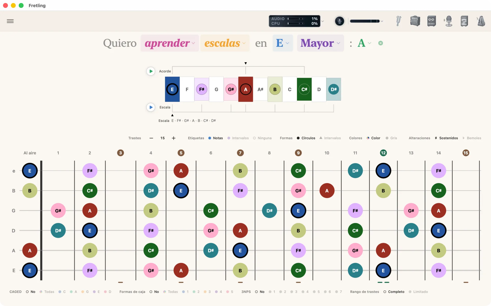
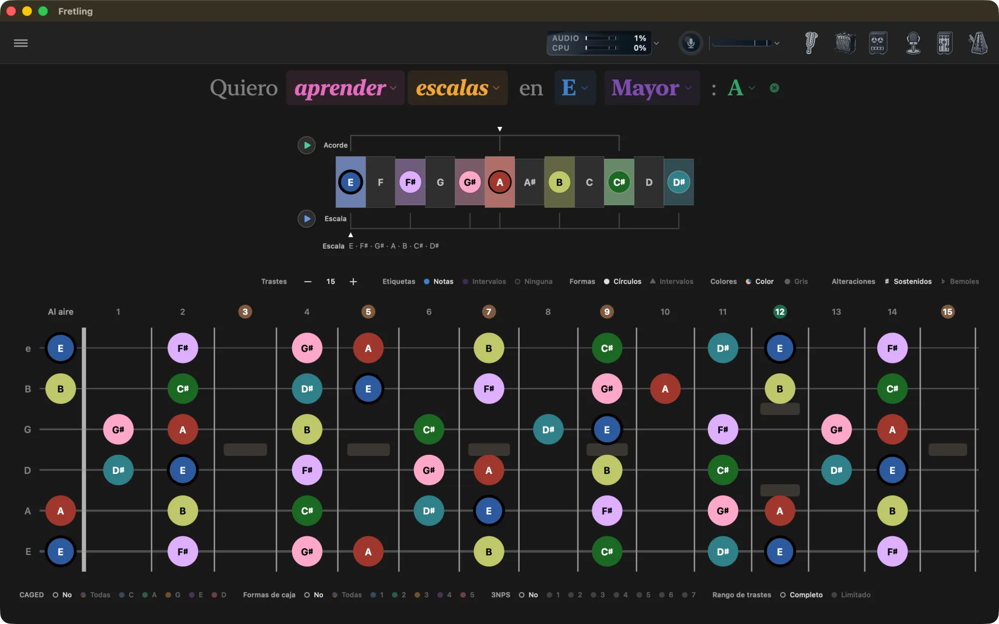
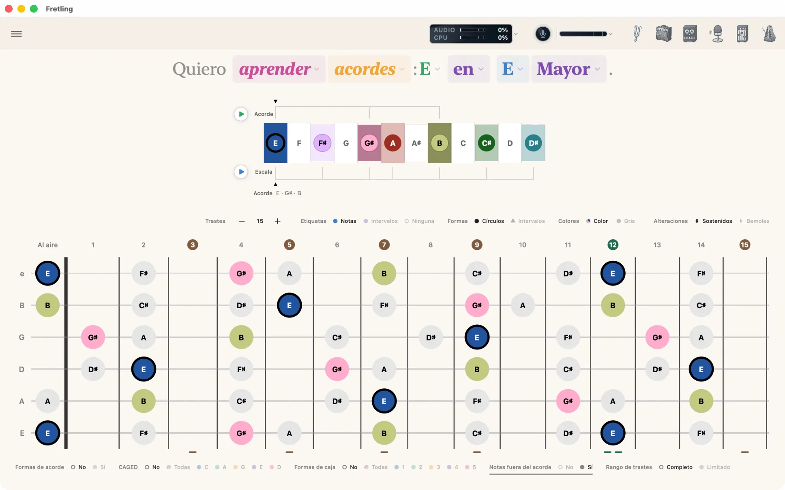
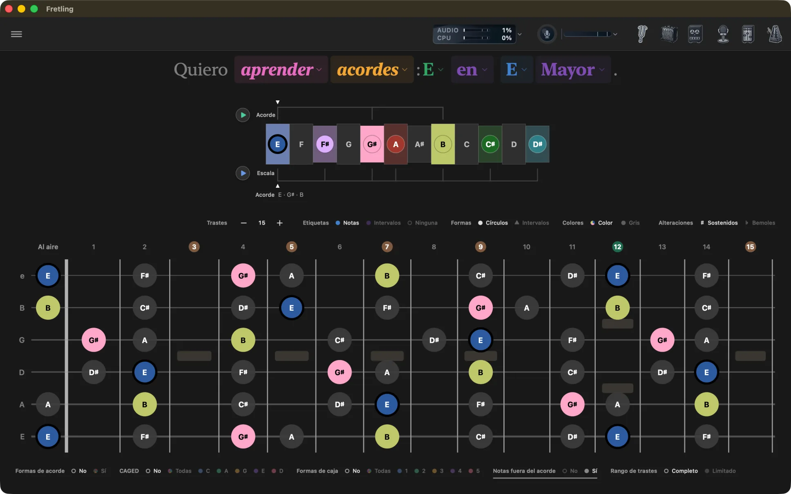
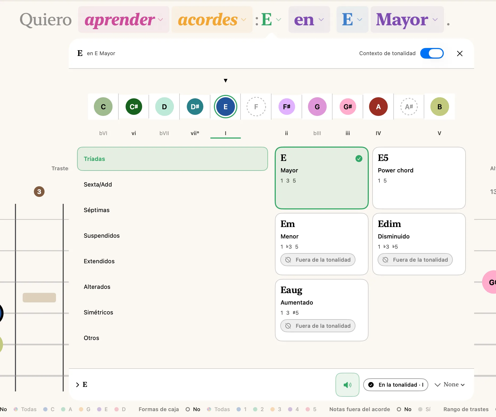
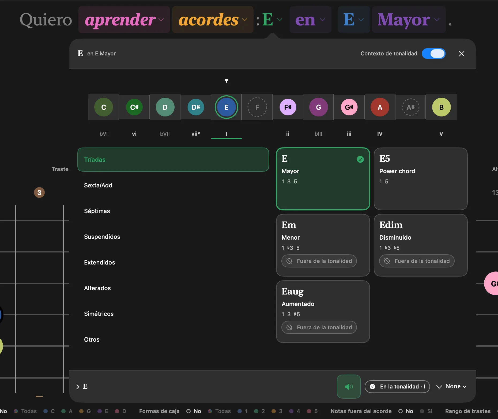
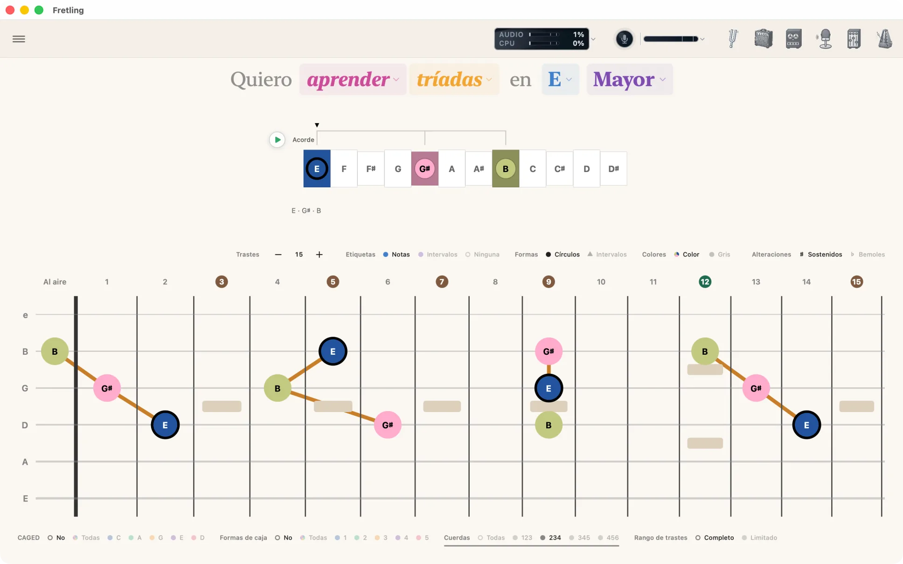
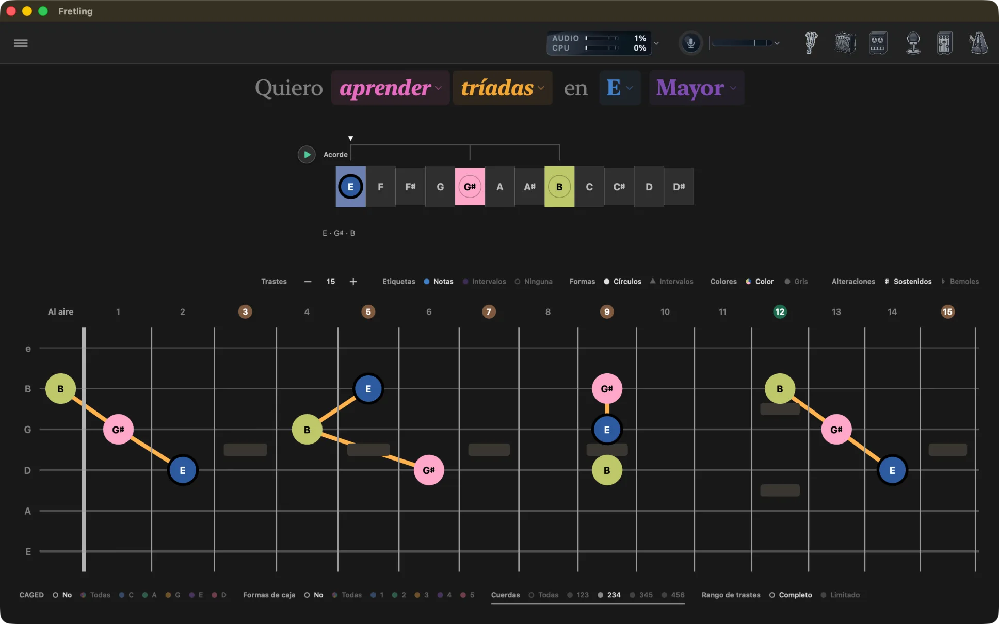
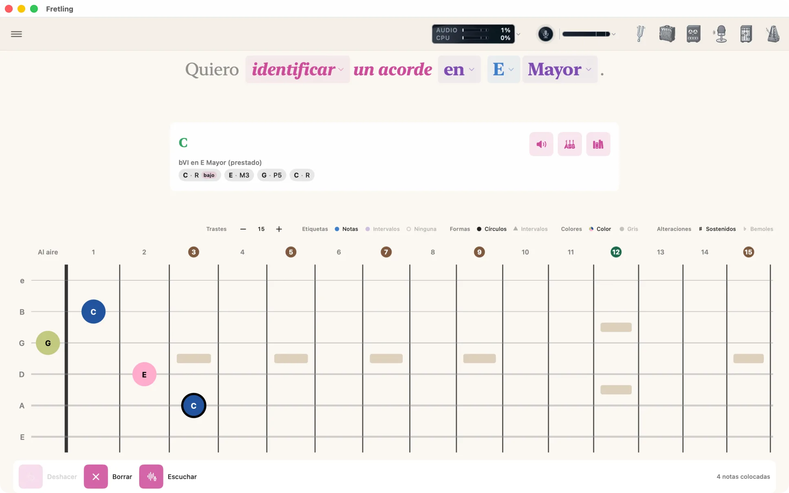
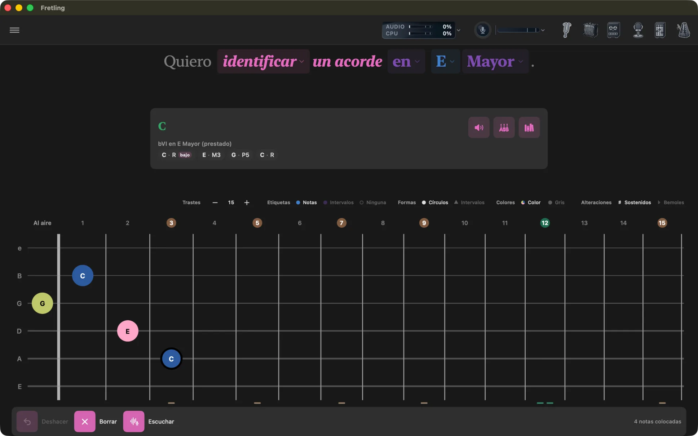

Modos de aprendizaje
Todo empieza desde una oración en la parte superior de la pantalla. Cada palabra coloreada es un menú desplegable; cambiar una reescribe lo que muestra el diapasón.
El encabezado de la oración
El encabezado se lee como prosa común y cada palabra resaltada abre un selector:
Quiero aprender escalas en E Mayor.
| Palabra | Opciones |
|---|---|
| aprender / identificar | El verbo decide para qué sirve la app en este momento: mostrarte algo (aprender) o nombrar algo que tocas (identificar). Cambiar a identificar deja intacta tu configuración de aprender, así que al volver se restaura exactamente. |
| Modo | Escalas, Acordes, Tríadas. |
| Nota raíz | Las doce notas. Los nombres siguen la elección ♯/♭ de la barra de visualización de marcadores. |
| Tipo de escala | Mayor, menor, pentatónica mayor y pentatónica menor están arriba; Más escalas abre el resto: blues, dórico, mixolidio, frigio, lidio, locrio, menor armónica y menor melódica. |
| Acorde | En el modo Acordes, y opcionalmente en el modo Escalas, un selector de acordes respaldado por el Atlas de acordes. |
En ventanas angostas el encabezado se desplaza en horizontal en vez de partirse, así que la oración siempre se lee en una sola línea.


Escalas
Propósito: aprender una escala a lo largo de todo el mástil en cualquier tonalidad.
Qué eliges: una nota raíz y un tipo de escala: doce escalas en total, que cubren las escalas mayor y menor, ambas pentatónicas, la escala de blues, cinco modos y las menores armónica y melódica.
Gratis o Pro: Mayor, Menor, ambas pentatónicas y Blues son gratis. Los cinco modos, la menor armónica y la menor melódica son Pro.
En el diapasón: cada nota de la escala está marcada. La línea de tiempo de la escala sobre el mástil dispone los doce semitonos en fila para que veas la forma de la tonalidad misma. Debajo del mástil, Agrupaciones visuales te deja superponer formas CAGED, una de las cinco cajas de posición de la escala o un patrón de tres notas por cuerda.
Añadir un acorde: El modo Escalas tiene un espacio opcional para un acorde al final de la oración. Elige un acorde del Atlas de acordes y se convierte en el contexto de la tonalidad: la línea de tiempo de la escala, el botón de reproducción del acorde y el Atlas lo siguen. Deja el diapasón en paz a propósito: en el modo Escalas la escala es el sujeto, y una nota del acorde dibujada más fuerte que sus vecinas responde a una pregunta que no hiciste. Bórralo con la ✕ junto al acorde para volver a la escala sola. Para ver las notas de un acorde marcadas en el mástil, cambia al modo Acordes.
Úsalo para: aprender una tonalidad a fondo y luego activar Formas de caja o CAGED para ver cómo encajan en ella los patrones que ya conoces.


Acordes
Propósito: explorar los acordes de una tonalidad y ver dónde se ubica cada uno en el mástil.
Qué eliges: una nota raíz, un tipo de escala (que fija la tonalidad) y luego un acorde. El selector de acordes es el Atlas de acordes: enumera los acordes de la tonalidad con sus números romanos, te deja escuchar cada uno y va más allá de los siete diatónicos cuando tú quieras.
En una tonalidad, o sin ninguna: la palabra en es en sí misma un menú, con las dos mismas opciones que tiene identificar. Elige sin tonalidad y la tonalidad desaparece: la escala sale de la oración y los colores de intervalo se reanclan en la propia fundamental del acorde, así que lo que ves es el acorde medido desde sí mismo y no desde una tonalidad a la que quizá no pertenezca. Sigue siendo un menú en los dos estados, así que la tonalidad vuelve desde el mismo lugar donde la quitaste.
Armonía prestada: el Atlas no se detiene en los siete acordes de la tonalidad. Elige un acorde de fuera y el Atlas nombra el préstamo en lugar de encogerse de hombros: una dominante secundaria se lee Prestado · V/V, un acorde tomado del modo paralelo se lee Prestado · iv, y ambos se ordenan junto a los acordes de la tonalidad. No hay nada que activar.
En el diapasón: las notas del acorde se marcan a todo color. Pon Notas fuera del acorde en Sí en la barra de chips bajo el mástil para mantener visible el resto de la escala debajo, en gris, y así ver el acorde dentro de su tonalidad. Las notas no diatónicas del acorde siempre se dibujan, haga lo que haga el filtro de la escala.
Formas de acorde: con los chips Formas de acorde bajo el mástil puestos en Sí, se dibujan en el mástil digitaciones reales del acorde seleccionado, opcionalmente con números de dedos y opcionalmente señaladas en la línea de tiempo. Ver Formas de acorde.
Úsalo para: ver cómo se relacionan entre sí los acordes de una tonalidad y cómo cada uno corresponde a una forma CAGED.


El Atlas de acordes
El Atlas es el catálogo de acordes de Fretling, y es gratis en todos los modos. Ábrelo desde el botón Atlas del encabezado, o desde la ranura de acorde al final de la oración de Escalas; en identificar, una lectura que te guste lleva una acción Abrir en el Atlas de acordes que lleva el acorde directo allí.
Cómo está dispuesto: una tira con las doce fundamentales arriba, luego las cualidades agrupadas en familias —tríadas, séptimas, sextas, suspendidas, con nota añadida, alteradas—, después los modificadores y, al final, un bajo invertido si lo quieres. Elige una fundamental, elige una cualidad y el mástil responde de inmediato.
Escucha sin decidir: tocar una cualidad la reproduce, y el Atlas se queda abierto. Ese es justo el punto: puedes comparar cuatro voicings de oído seguidos sin cerrar la hoja y reabrirla cada vez. También hay un control aparte para escuchar, así que la vista previa está al alcance sin el toque.
Conoce tu tonalidad. Cada acorde lleva su número romano para la tonalidad de la oración, y los acordes de la tonalidad se ordenan primero. Un acorde de fuera de la tonalidad no se lista sin más: el Atlas nombra el préstamo. Una dominante secundaria se lee Prestado · V/V, un acorde tomado del modo paralelo se lee Prestado · iv, y el intercambio modal se etiqueta como tal. No hay que activar nada, y nada de esto está detrás del desbloqueo de Pro.
Sigue a la barra de visualización de marcadores. Etiquetas, Colores y Alteraciones llegan al Atlas igual que llegan al mástil, así que un acorde deletreado con bemoles en el diapasón se deletrea con bemoles aquí. La única diferencia deliberada: con Etiquetas en Ninguna el Atlas conserva los nombres de los acordes, porque un catálogo sin nombres no es un catálogo.


Tríadas
Propósito: practicar voicings de tres notas en conjuntos específicos de cuerdas.
Qué eliges: una nota raíz y un tipo de tríada: Mayor, Menor, Aumentada o Disminuida.
En el diapasón: las notas de la tríada se marcan a lo largo del mástil. Activa Mostrar líneas de tríadas en Configuración → Diapasón para unir cada voicing de la tríada con una línea. El grupo Cuerdas de Agrupaciones visuales reduce la vista a un solo conjunto de cuerdas: 123, 234, 345 o 456, para que trabajes una forma a la vez. CAGED y Formas de caja también están disponibles aquí; las cajas vienen de la pentatónica que corresponde a la tríada.
Úsalo para: aprender una tríada en un conjunto de cuerdas y luego mover la misma forma hacia arriba en el mástil y al siguiente conjunto.


Identificar un acorde
Propósito: la búsqueda inversa: tienes una forma bajo los dedos y quieres saber cómo se llama.
Cambia el verbo del encabezado de aprender en identificar y la oración se convierte en “Quiero identificar un acorde en C Mayor”. Un chip te permite quitar la tonalidad: “… un acorde sin tonalidad”. Con tonalidad, las lecturas también se nombran por su número romano en esa tonalidad; sin ella, se nombran por sí mismas.
Darle las notas a Fretling
- Tócalas en el mástil. Toca una posición para colocar una nota; tócala de nuevo para quitarla. Una barra de colocación te da Deshacer, Borrar y un conteo de las notas colocadas.
- Tócalas. Pro Presiona Escuchar en la barra de colocación: abre Detección en vivo, eleva su panel para que el control Detener quede al alcance y la pone a escuchar. Toca el acorde y luego presiona Capturar lo que toqué para colocar en el mástil lo que oyó, en lugar de lo que hubieras puesto (Deshacer lo recupera). El mismo paso está en el propio panel de Detección en vivo como Enviar al diapasón. Sin Pro, el botón muestra la hoja de desbloqueo y el micrófono nunca se abre.
Leer los resultados
Fretling clasifica los nombres posibles bajo un encabezado Lecturas en lugar de comprometerse con una sola respuesta: el mismo conjunto de notas suele ser varios acordes, y cuál es el correcto depende de un contexto que la app no puede ver. Los acordes con barra se muestran con su nota de bajo señalada. Desde una lectura puedes:
- Escúchalo: reproduce el acorde.
- Mostrar voicings: muestra digitaciones tocables para ese nombre.
- Abrir en el Atlas de acordes: salta a la entrada completa del acorde.

